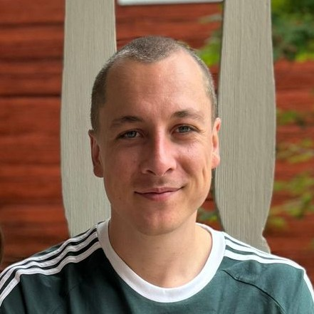

I am a machine learning researcher based in Copenhagen. I work on algorithms for AI4Science, which means I do research at the interface of numerical methods and machine learning, including topics such as:
I am currently a postdoc in Søren Hauberg's group at DTU. Before that, I did probabilistic numerics in Philipp Hennig's group in Tübingen, and before that, scattered data approximation with Christian Rieger in Bonn. I studied Mathematics and Business Mathematics in Bonn and Mannheim. I am a member of the ELLIS Society and an affiliated researcher at the Pioneer Centre for AI (P1).
If you need a three-sentence biography, e.g. for announcing a talk, [click here].
I go by "Nico", but use "Nicholas" when writing papers. Online, I tend to be @pnkraemer (and "pn" stands for "Peter Nicholas"). Find my papers on Google Scholar and my code on GitHub.